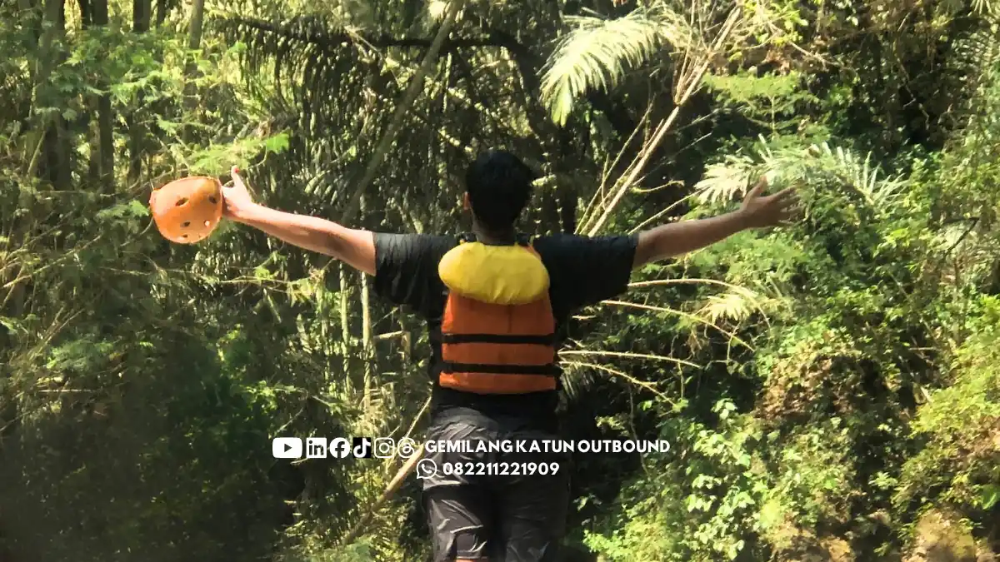

Daftar Isi
- Rafting Mulai Usia Berapa?
- Mengapa Penyedia Rafting Menerapkan Batas Usia?
- Siapa yang Sebaiknya Tidak Mengikuti Rafting?
- Apa yang Bisa Dilakukan Peserta yang Tidak Ikut Rafting?
- Apakah Pemula Harus Bisa Berenang?
- Apa yang Terjadi Saat Briefing Keselamatan Rafting?
- Bagaimana Mengatasi Rasa Takut Saat Pertama Kali Rafting?
Rafting umumnya punya batas usia minimum dan maksimum yang berbeda tiap penyedia, sehingga pemula perlu memastikan aturan usia dan kondisi kesehatan sebelum mendaftar.
Mengetahui kriteria fisik dan kesiapan rombongan sangat penting agar seluruh peserta dapat berpetualang dengan aman. Standar ini ditetapkan untuk kenyamanan bersama di medan sungai berarus deras.
- Batas usia rafting ditetapkan penyedia jasa, sehingga angka pastinya harus ditanyakan langsung sebelum memesan.
- Rafting termasuk aktivitas dengan intensitas fisik menengah hingga tinggi, dengan sesi di sungai sekitar 1,5 hingga 2 jam (Gemilang Katun Outbound, 2026).
- Peserta dengan riwayat penyakit jantung atau tekanan darah tinggi tidak terkontrol sebaiknya tidak dipaksakan ikut.
- Pemula tidak wajib bisa berenang karena jaket pelampung dan pemandu berpengalaman disediakan.
- Briefing keselamatan wajib disimak secara seksama sebelum peserta turun ke sungai.
Dengan memeriksa regulasi usia dan kesiapan medis sebelum hari keberangkatan, acara petualangan arung jeram Anda di Malang akan berjalan lancar, tertib, dan bebas rasa waswas.
Rafting Mulai Usia Berapa?
Rafting mulai dapat diikuti pada usia minimum yang ditetapkan penyedia jasa, dan angkanya berbeda antarpenyedia, sehingga peserta wajib menanyakan aturan usia sebelum memesan.
Gemilang Katun Outbound (2026) mencatat bahwa penyedia jasa rafting umumnya menerapkan batasan usia, sehingga anak-anak di bawah usia tertentu maupun lansia biasanya tidak diperkenankan ikut demi keselamatan.
Cara paling aman adalah menanyakan tiga hal kepada penyedia: usia minimum, usia maksimum, dan apakah peserta di bawah usia dewasa harus didampingi oleh orang tua.
Mengapa Penyedia Rafting Menerapkan Batas Usia?
Penyedia rafting menerapkan batas usia karena aktivitas ini menuntut kekuatan fisik menengah hingga tinggi, serta karena arus sungai bisa berubah tanpa terduga sehingga risiko bagi peserta rentan lebih besar.
Sesi rafting di sungai berlangsung sekitar 1,5 hingga 2 jam, dan rangkaian kegiatan rata-rata 3 hingga 5 jam (Gemilang Katun Outbound, 2026). Selama itu peserta mendayung, menahan guncangan, dan mengikuti aba-aba pemandu.
Anak-anak yang masih kecil mungkin belum mampu mengikuti instruksi cepat atau menahan guncangan perahu. Peserta lanjut usia dapat lebih rentan terhadap kelelahan atau cedera sehingga batas usia dibuat untuk melindungi kedua kelompok tersebut.
Siapa yang Sebaiknya Tidak Mengikuti Rafting?
Peserta yang sebaiknya tidak mengikuti rafting adalah mereka dengan riwayat penyakit jantung, tekanan darah tinggi yang tidak terkontrol, atau kondisi fisik yang membatasi aktivitas berat di alam terbuka.
Kejujuran mengenai riwayat kesehatan diri sangat penting saat mendaftar. Pemandu dan panitia dapat memberikan solusi terbaik atau alternatif kegiatan yang lebih aman bagi anggota rombongan Anda.
| Kondisi Peserta | Rekomendasi Umum |
|---|---|
| Penyakit jantung | Tidak dipaksakan ikut, konsultasi dokter |
| Tekanan darah tinggi tidak terkontrol | Tidak dipaksakan ikut, konsultasi dokter |
| Asma atau gangguan napas | Informasikan kepada pemandu dan konsultasi dokter |
| Kondisi fisik yang membatasi aktivitas berat | Pertimbangkan aktivitas darat |
| Sedang tidak sehat | Tunda kegiatan |
Informasi ini bersifat umum dan bukan pengganti saran medis. Peserta yang ragu terhadap kondisi tubuhnya sebaiknya berkonsultasi dengan dokter sebelum memutuskan mendaftar paket rafting.
Apa yang Bisa Dilakukan Peserta yang Tidak Ikut Rafting?
Peserta yang tidak ikut rafting dapat mengikuti aktivitas darat, seperti permainan outbound, selama peserta lain melakukan sesi rafting, sehingga rombongan tetap bisa berkegiatan bersama.
Pendekatan ini disebutkan Gemilang Katun Outbound (2026) untuk peserta dengan kondisi kesehatan tertentu. Rafting dijadikan pilihan seru, bukan kewajiban mutlak bagi seluruh anggota rombongan.
Bagi rombongan yang mencakup anak-anak atau lansia, pendekatan ini menjaga keselamatan tanpa membuat siapa pun merasa tersisih. Pelajari juga paket outbound dan rafting Malang untuk kombinasi kegiatan darat dan air.
Apakah Pemula Harus Bisa Berenang?
Tidak, pemula tidak wajib bisa berenang karena seluruh peserta dilengkapi jaket pelampung berstandar keselamatan dan didampingi pemandu selama kegiatan rafting berlangsung.

Jaket pelampung tetap wajib dipakai walaupun peserta mahir berenang. Menurut Gemilang Katun Outbound (2026), arus sungai dapat sangat tidak terduga, sehingga pelampung diperlukan oleh semua peserta.
Peserta yang sama sekali tidak bisa berenang sebaiknya menyampaikan hal itu kepada pemandu saat briefing agar mendapat perhatian tambahan dan ditempatkan pada posisi duduk paling aman.
Apa yang Terjadi Saat Briefing Keselamatan Rafting?
Briefing keselamatan rafting berisi arahan posisi duduk yang aman, cara memegang dayung, aba-aba pemandu, dan prosedur yang harus dilakukan bila perahu terbalik atau peserta jatuh ke air.
Briefing dilakukan sebelum peserta turun ke sungai dan tidak boleh dilewatkan. Pemula sebaiknya menyimak seluruh arahan dengan fokus dan bertanya bila ada instruksi yang belum jelas dipahami.
Cara memegang dayung yang benar juga membantu mencegah cedera tangan. Pemandu akan menjelaskan gerakan dayung yang harus dilakukan serempak oleh satu perahu untuk melewati celah jeram.
Bagaimana Mengatasi Rasa Takut Saat Pertama Kali Rafting?
Rasa takut saat pertama kali rafting dapat diatasi dengan memahami prosedur keselamatan, mengetahui bahwa pemandu mendampingi setiap perahu, dan mengingat bahwa rasa tegang sebelum mulai adalah hal yang wajar.
Gemilang Katun Outbound (2026) menyebut bahwa menaklukkan jeram dapat menumbuhkan rasa percaya diri yang terbawa ke kehidupan sehari-hari. Banyak peserta yang awalnya takut justru ingin mengulanginya setelah selesai.
Persiapan yang baik ikut menenangkan pikiran. Tidur cukup sekitar 7 hingga 8 jam sebelum hari kegiatan membantu tubuh siap menghadapi sesi rafting di atas arus air sungai yang dingin.
Syarat pemula untuk rafting di Malang mencakup memenuhi batas usia penyedia, berada dalam kondisi kesehatan yang mendukung, dan menyimak briefing keselamatan sebelum turun ke sungai.
PERTANYAAN UMUM (FAQ)
Ingin Konsultasi Syarat Peserta & Jadwal Rafting Pemula di Malang?
Hubungi Gemilang Katun Outbound 0822-1122-1909